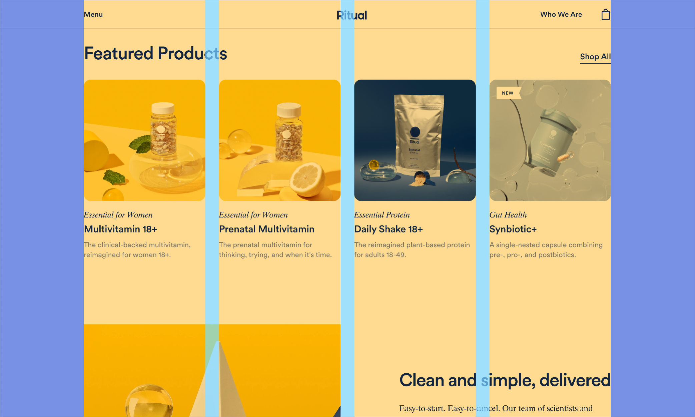
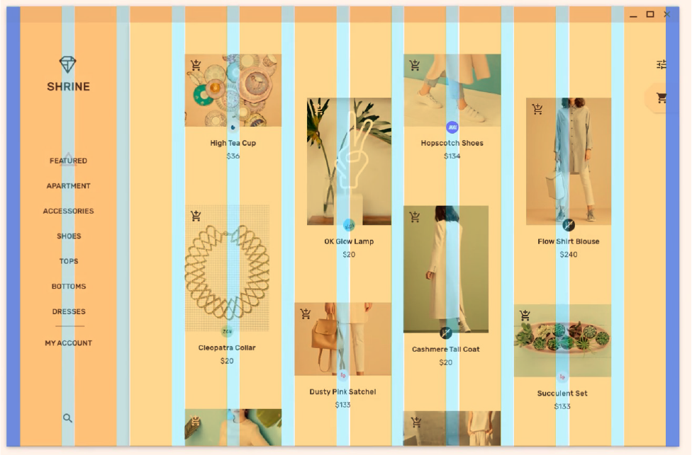
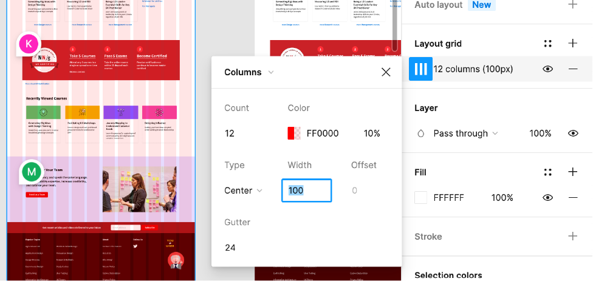

Saturday, 1 Jan 2023
Grid system for better Design User Interface

A grid system is a design tool used to arrange content on a webpage. It is a series of vertical and horizontal lines that create a matrix of intersecting points, which can be used to align and organize page elements. Grid systems are used to create a consistent look and feel across a website, and can help to make the layout more visually appealing and easier to navigate.
If you’ve been to New York City and have walked the streets, it is easy to figure out how to get from one place to another because of the grid system that the city is built on. Just as the predictability of a city grid helps locals and tourists get around easily, so do webpage grids provide a structure that guides users and designers alike. Because of their consistent reference point, grids improve page readability and scannability and allow people to quickly get where they need to go.
Definition: A grid is made up of columns, gutters, and margins that provide a structure for the layout of elements on a page.
Definition: A grid is made up of columns, gutters, and margins that provide a structure for the layout of elements on a page.
There are three common grid types used in websites and interfaces: column grid, modular grid, and hierarchical grid.
Column grid involves dividing a page into vertical columns. UI elements and content are then aligned to these columns.
Modular grid extends the column grid further by adding rows to it. This intersection of columns and rows make up modules to which elements and content are aligned. Modular grids are great for ecommerce and listing pages, as rows are repeatable to accommodate browsing.
Hierarchical grid: Content is organized by importance using columns, rows, and modules. The most important elements and pieces of content take up the biggest pieces of the grid.
Breaking Down the Grid
Regardless of the type of grid you are using, the grid is made up of three elements: columns, gutters, and margins.
Columns: Columns take up most of the real estate in a grid. Elements and content are placed in columns. To adapt to any screen size, column widths are generally defined with percentages rather than fixed values and the number of columns will vary. For example, a grid on a mobile device might have 4 columns and a grid on a desktop might have 12 columns.
Gutters: The gutter is the space between columns that separates elements and content from different columns. Gutter widths are fixed values but can change based on different breakpoints. For example, wider gutters are appropriate for larger screens, whereas smaller gutters are appropriate for smaller screens like mobile.

Three elements make up any grid: (1) columns, (2) gutters, and (3) margins.
Examples of Grids in Use
Example 1: Hierarchical Grid
Our first example is from The New York Times. This screen utilizes a hierarchical grid to create a newspaper-like reading experience. At desktop screen size, two main columns make up the hierarchical grid. The most important news story takes up the most space in the grid, the left column, followed by secondary and tertiary stories, which take up the smaller column and modules on the right.
The New York Times uses a hierarchical grid to achieve its newspaper-like reading experience. (We highlighted the columns in yellow, the gutters in blue, and the margins in purple.)
Example 2: Column Grid
Our second example is from Ritual.com, a vitamin company. This design uses a column grid to create an attractive visual experience. At this screen size, four consistently sized columns make up the grid structure and elements are aligned to and within these columns. The gutters, the spaces in between the columns, are also consistently sized and help the user visually separate the different products. The margins are independently sized and are the same between the left and right sides.
Ritual’s four-column grid makes scanning products easy. (We highlighted the columns in yellow, the gutters in blue, and the margins in purple.)
Example 3: Modular Grid
Our third example is from Behance , a design library. The site’s design uses a modular grid to create a pleasant browsing experience. At desktop size, rows are made up of 4 consistently sized modules. Horizontal gutters are slightly thicker than vertical gutters and the margins are consistently sized on the left and right of the design. Like in previous example, the gutters visually separate each element.

Behance’s design uses a modular grid, which allows users to easily browse. (We highlighted the columns in yellow, the gutters in blue, and the margins in purple.)
Example 4: Breaking the Grid
Our last example is Shrine from Google’s Material Studies. This design uses a column grid, as we can see based on the left navigation, which is 2 columns wide. Look closely and you will see that some product images settle to the margins, while others do not. Breaking the grid like this makes it challenging to focus or quickly scan product images and calls more attention to some products over others. It is okay to break the grid every so often, as long as you have a valid reason for it.
Breaking the grid produces a chaotic browsing experience for users. (We highlighted the columns in yellow, the gutters in blue, and the margins in purple.)
Benefits of the Grid
Using a grid benefits both end users and the designers alike:
- Designers can quickly put together well-aligned intterfaces
- Users can easily scan predictable grid-based interfaces.
- Encourages consistent design patterns
- A good grid is easy to adapt to various screen sizes and orientations. In fact, grid layouts are an essential component of responsive web design. Responsive design uses breakpoints to determine the screen size threshold at which the layout should change. For example, a desktop screen may have 12 grid columns, which may be stacked on mobile so that the resulting layout has only 4 columns.

At the mobile size, Behance’s one-column grid (left) was reflowed into a four-column grid structure (right).
Even more importantly, the grid is not a throw-away concept. It is used by both designers and developers alike. Be sure to communicate with your developers the grid structure used when creating the design, so they can implement it accordingly.
Choosing and Setting Up Your Grid
How you use and set up a grid is fundamental to creating well thought out layouts and experiences for your user.
Choose the right grid for your needs. Take time to think through what type of grid — column, modular, or hierarchical — best suits your needs. A hierarchical grid may be the best fit if one item on your page will always be more important than the surrounding elements. For example, hierarchical grids are great for online news platforms. If the content you need to display is highly variable, consider using a basic column or modular grid, as these provide lots of flexibility when designing. For example, elements and content can span across multiple columns or modules or just one to fit design needs.
Spend time setting up your grid. Once you have figured out what type of grid will work well for your needs, start setting it up. Determine the number of columns and the margin and gutter sizes relative to your screen sizes. You will most likely want to prepare for mobile, tablet, and desktop screens. A 12-column grid at laptop or desktop size is generally flexible enough for most design needs. The number of columns will decrease as your device size decreases. Wireframing tools like Sketch and Figma have quick and easy ways to set up and edit your grid, even after you have started designing.
Easily set the number of columns, the gutter size, and margin size in Figma.
Always place content within columns, not gutters. The gutters should remain empty as you place elements on the grid in order to clearly separate and align content and elements.

Content or elements should be placed within and across columns, not gutters.
Consider using an 8px grid system. Consider using an 8px grid system. For most common devices, the screen size in pixels is a multiple of 8. Keeping grid-component values at a multiple of 8 will generally make it easier to scale and implement a grid.
Conclusion
Grids not only provide designers a structure on which to base layouts, but they also improve readability and scannability for end users. Use a good grid system that easily adapts to various screen sizes.
Design Interface
Newlatters
Stories and interviews
Subscribe to learn about new product features, the latest in technology, solutions, and updates.
We care about your data in our privacy policy